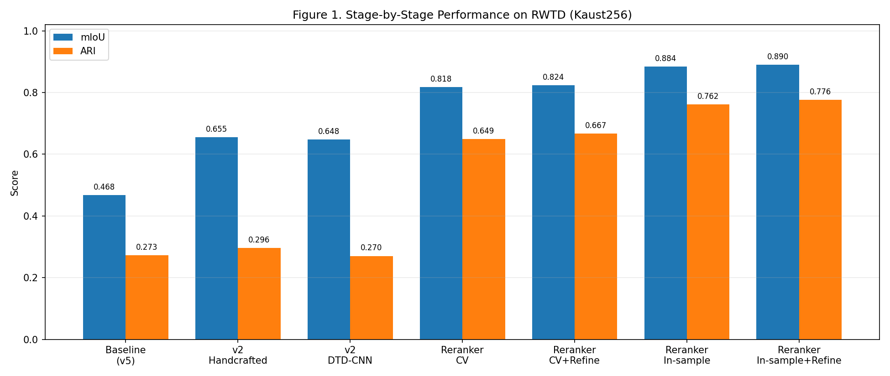
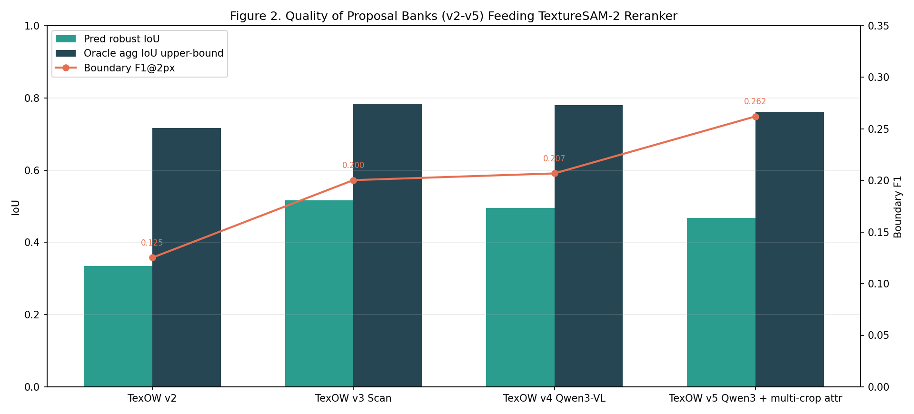
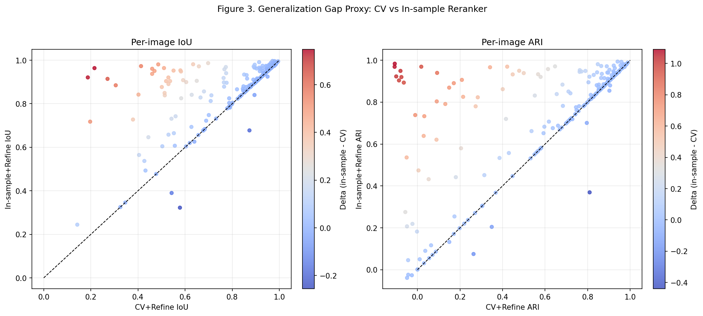
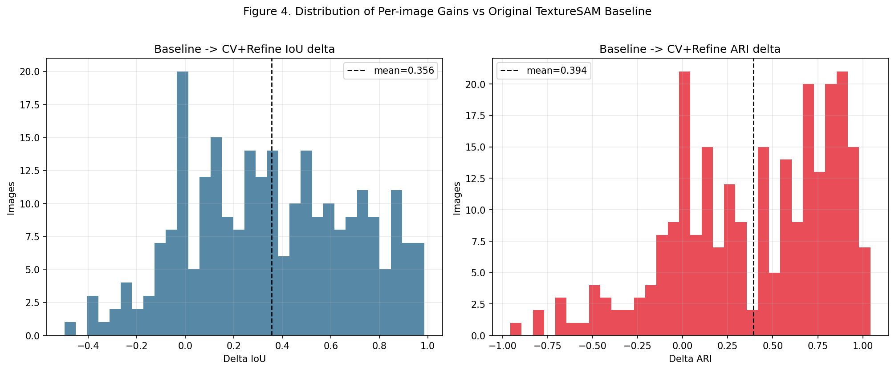
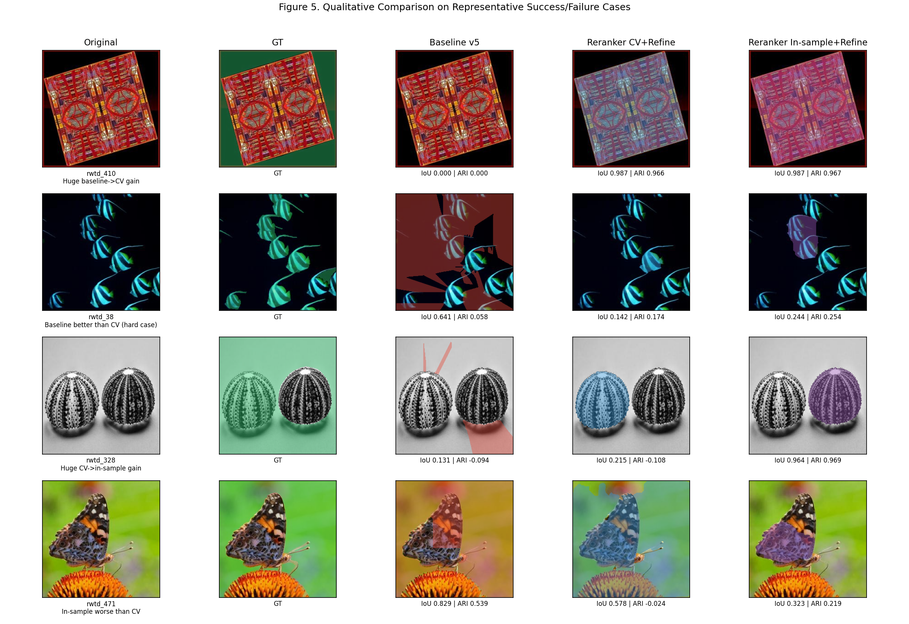
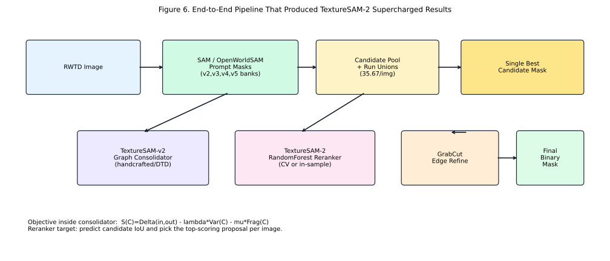
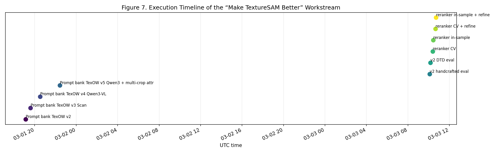

Original TextureSAM Baseline
mIoU 0.467954
ARI 0.273033
RWTD Kaust256 Research Record
End-to-end technical report of what changed, why it improved, what was trained, what was tested, and which method is best for robustness.
mIoU 0.467954
ARI 0.273033
mIoU 0.823782
ARI 0.666729
mIoU 0.889516
ARI 0.776114
Interpretation: in-sample is an upper bound, CV is the deployment-quality estimate.
Instead of suppressing many masks, keep rich fragmented proposals to preserve coverage.
Two modes were implemented: handcrafted filter-bank descriptors and a DTD-trained small CNN embedding.
Construct a proposal graph, score edges by texture similarity + weak boundary + low heterogeneity, then union-find merge.
Select final component by S(C)=Delta(in,out)-lambda*Var(C)-mu*Frag(C) and postprocess holes/components.
Pool proposals from four upstream runs, plus per-run union masks, to increase candidate quality per image.
Train RandomForest to predict candidate IoU from texture/shape/consensus features; pick top candidate.
Run GrabCut with selected mask as seed and keep largest component for cleaner boundaries.
Unit tests passed (5/5), descriptor modes compared, CV and in-sample modes both measured.

mIoU and ARI both increase sharply after introducing multi-bank reranking and refinement.
| Stage | What was added | Training involved? | Main effect |
|---|---|---|---|
| TextureSAM-v2 Consolidator | Graph merge + global objective + morphological cleanup | No (handcrafted mode) | Strong mIoU lift; moderate ARI lift |
| DTD Descriptor Branch | Small CNN trained on DTD (47 classes, 128-d embedding) | Yes (classification training) | mIoU improved; ARI slightly below handcrafted in this run |
| Multi-bank Reranker | RandomForest candidate scoring from 4 proposal banks | Yes (supervised on RWTD candidate IoU labels) | Largest jump on both mIoU and ARI |
| Edge-aware Refine | GrabCut seeded by selected mask + largest component | No | Additional boundary + ARI gains |
| MPCL Module | Multi-Prompt Consistency Loss implementation + tests | Ready, but not run in SAM fine-tune loop here | Training-time anti-fragmentation mechanism prepared |
DTD checkpoint details: image size 96, embedding 128, best val accuracy 0.0931 after 3 epochs in this run.

v2-v5 banks provide complementary candidates; oracle aggregation upper-bounds stay high, justifying a stronger consolidation/reranking layer.
| Run | Prompt strategy | Mean robust IoU | Oracle aggregation IoU | Boundary F1 | Avg masks/prompt |
|---|---|---|---|---|---|
| v2 | Heuristic freeform texture text | 0.3347 | 0.7172 | 0.1252 | 1.0 |
| v3_scan | Heuristic multi-scale transition scan | 0.5158 | 0.7843 | 0.2003 | 1.0 |
| v4_qwen3 | Qwen3-VL region descriptions + scan | 0.4953 | 0.7802 | 0.2068 | 1.0 |
| v5_qwen3_multiscale_attr | Qwen3 attribute descriptors + multi-crop fusion | 0.4680 | 0.7609 | 0.2621 | 12.0 |
In TextureSAM-2 reranking, these four banks are pooled into one candidate set (avg 35.67 candidates/image).

In-sample is often better but not always; CV remains the cleaner estimate for deployment robustness.

CV+Refine improves IoU on 209/256 images and ARI on 204/256 images versus baseline v5 masks.

The page includes both large improvements and hard failure examples to avoid cherry-picking.


Prompt banks were generated on March 1, 2026; TextureSAM-v2 and supercharged reranker experiments were run on March 3, 2026.
Recommendation: For practical deployment, the best default is TextureSAM-2 Reranker (CV + edge-aware refine).
It is the strongest method with held-out evaluation and avoids the optimism of in-sample fitting.
| Method | RWTD score | Generalization risk | Use when |
|---|---|---|---|
| Reranker In-sample + Refine | Highest (0.8895 / 0.7761) | Higher (trained and evaluated on same images) | Upper-bound analysis, not final deployment claim |
| Reranker CV + Refine | Best robust RWTD result (0.8238 / 0.6667) | Moderate (held-out folds) | Primary deployment candidate |
| Handcrafted Consolidator (no reranker) | 0.6551 / 0.2963 | Lower model-overfit risk (no learned selector) | Fallback when no supervised reranker retraining is available |
Important: all quantitative results here are RWTD-based. For truly arbitrary texture domains, cross-dataset validation should be run before final model lock.
cd /home/galoren/TextureSAM-v2
# 1) TextureSAM-v2 handcrafted consolidator
python3 scripts/run_rwtd_eval.py \
--rwtd-root /home/galoren/rwtd_partition_nonsam/data/rwtd_kaust256 \
--prompt-masks-root /home/galoren/rwtd_miner_public_site/texow_sam_vlm_freeform_rwtd_v5_qwen3_multiscale_attr/predictions/prompt_masks \
--baseline-masks-root /home/galoren/rwtd_miner_public_site/texow_sam_vlm_freeform_rwtd_v5_qwen3_multiscale_attr/predictions/masks \
--descriptor-mode handcrafted \
--out-dir /home/galoren/TextureSAM-v2/reports/rwtd_v5_handcrafted
# 2) TextureSAM-v2 DTD mode
python3 scripts/run_rwtd_eval.py \
--rwtd-root /home/galoren/rwtd_partition_nonsam/data/rwtd_kaust256 \
--prompt-masks-root /home/galoren/rwtd_miner_public_site/texow_sam_vlm_freeform_rwtd_v5_qwen3_multiscale_attr/predictions/prompt_masks \
--baseline-masks-root /home/galoren/rwtd_miner_public_site/texow_sam_vlm_freeform_rwtd_v5_qwen3_multiscale_attr/predictions/masks \
--descriptor-mode dtd_cnn \
--dtd-checkpoint /home/galoren/TextureSAM-v2/artifacts/dtd_small_cnn.pt \
--out-dir /home/galoren/TextureSAM-v2/reports/rwtd_v5_dtd
# 3) Supercharged reranker (robust)
python3 scripts/run_multibank_reranker.py \
--rwtd-root /home/galoren/rwtd_partition_nonsam/data/rwtd_kaust256 \
--proposal-root /home/galoren/rwtd_miner_public_site/texow_sam_vlm_freeform_rwtd_v2/predictions/prompt_masks \
--proposal-root /home/galoren/rwtd_miner_public_site/texow_sam_vlm_freeform_rwtd_v3_scan/predictions/prompt_masks \
--proposal-root /home/galoren/rwtd_miner_public_site/texow_sam_vlm_freeform_rwtd_v4_qwen3/predictions/prompt_masks \
--proposal-root /home/galoren/rwtd_miner_public_site/texow_sam_vlm_freeform_rwtd_v5_qwen3_multiscale_attr/predictions/prompt_masks \
--mode cv --cv-folds 5 \
--n-estimators 500 --max-depth 18 --min-samples-leaf 2 \
--apply-refine --refine-iters 2 --refine-min-area 50 \
--out-dir /home/galoren/TextureSAM-v2/reports/reranker_cv_refined
# 4) Unit tests
python3 -m unittest discover -s tests -p 'test_*.py'